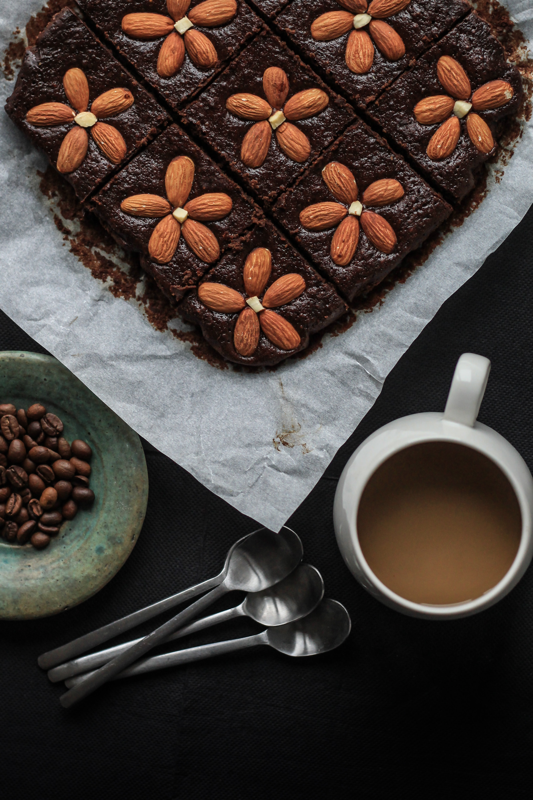
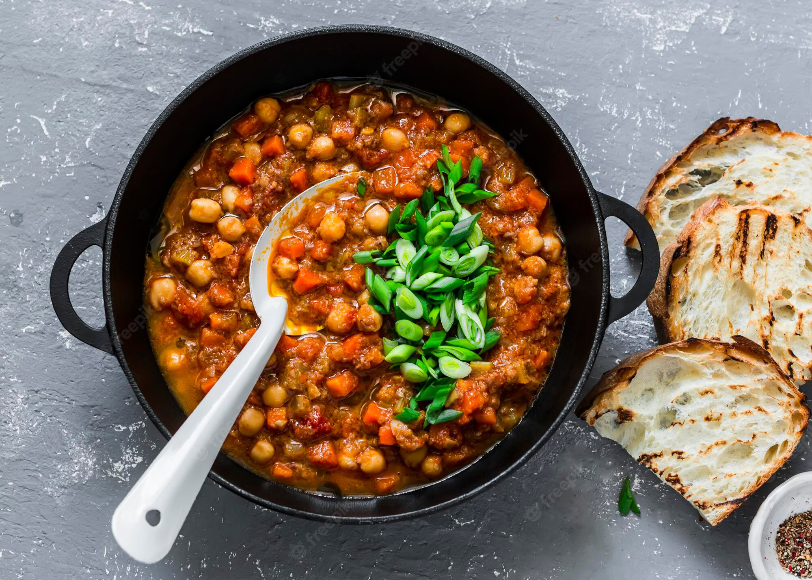
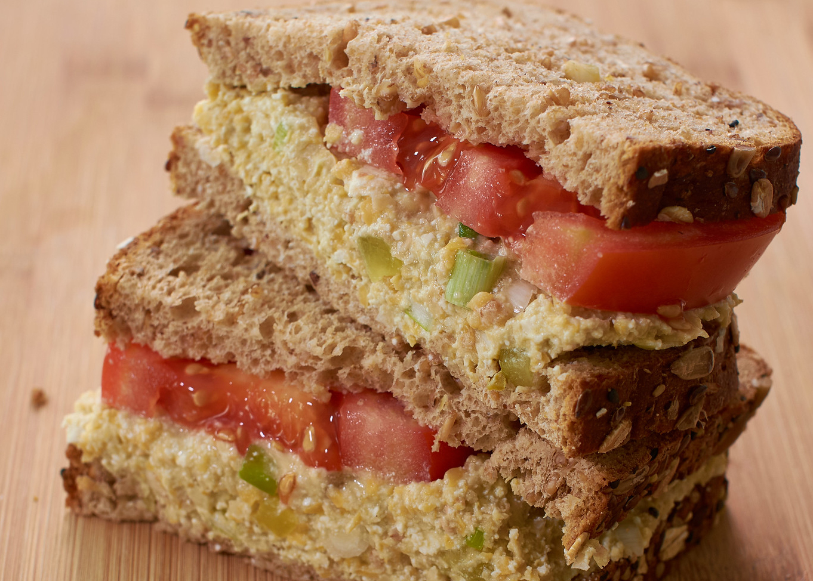
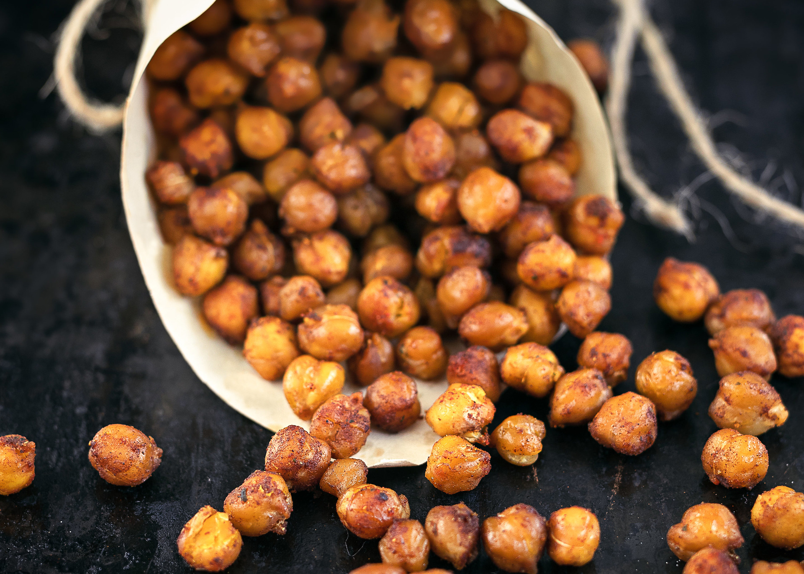

"Black bean brownies with decorative almond flowers and a cup of joe." — Suzanne P. (Bainbridge Island, WA)"A fresh twist on black bean soup with orange to balance the earthy bean." - Olivia M. (Berkeley, CA)"A fresh bowl of paprika spiced hummus for your next appetizer." - Ella B. (Saline, MI)"Chickpeas used to create a sandwhich or gyro filling." - Anna O. (Overland Park, KS)

"A cozy fall bowl of buffalo chickpea chili with mushrooms and a side of gulten free bread." - Emily L. (Pleasanton, CA)

"A rendition of a tuna salad sandwich made with chickpeas for a lighter approach." - Ramona C. (Chicago, Il)"A mexican bean bowl with a southern barbequed bean twist." - Om K. (Danville, CA)

"Ranch-dusted roasted chickpea popcorn bites." - Ayesha G. (Almaden, CA)